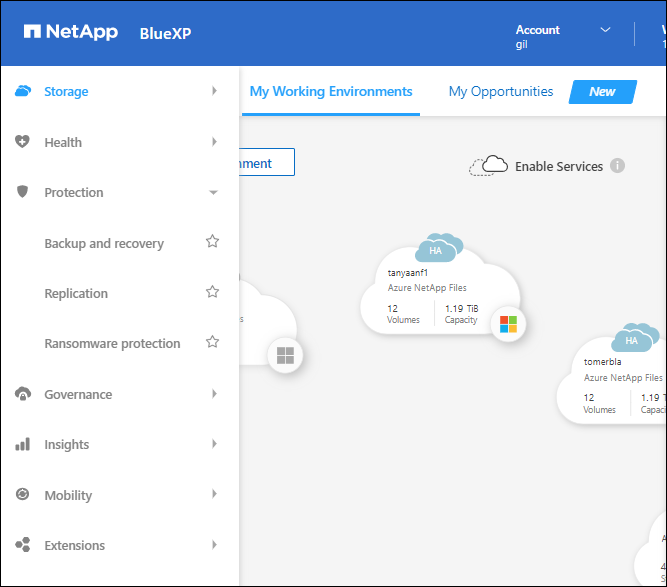

Notes de mise à jour
Notes de mise à jour
Quoi de neuf
 Suggérer des modifications
Suggérer des modifications
Découvrez les nouveautés des fonctionnalités d'administration BlueXP : comptes BlueXP, connecteurs, identifiants de fournisseur cloud, etc.
26 mars 2024
Version en mode privé (3.9.38)
Une nouvelle version du mode privé est maintenant disponible pour BlueXP. Cette version inclut les versions suivantes des services BlueXP prises en charge avec le mode privé.
| Service | Version incluse |
|---|---|
Connecteur |
3.9.38 |
Sauvegarde et restauration |
12 mars 2024 |
Classement |
4 mars 2024 |
Gestion Cloud Volumes ONTAP |
8 mars 2024 |
Portefeuille digital |
30 juillet 2023 |
Gestion des clusters ONTAP sur site |
30 juillet 2023 |
La réplication |
18 septembre 2022 |
Cette nouvelle version est téléchargeable depuis le site du support NetApp.
8 mars 2024
Connecteur 3.9.38
À ce stade, la version 3.9.38 est disponible pour le mode standard et le mode restreint. Cette version inclut la prise en charge d'IMDSv2 dans AWS et une mise à jour des autorisations AWS.
Prise en charge d'IMDSv2
BlueXP prend désormais en charge Amazon EC2 instance Metadata Service version 2 (IMDSv2) avec l'instance de connecteur et les instances Cloud Volumes ONTAP. IMDSv2 fournit une protection améliorée contre les vulnérabilités. Seul IMDSv1 était précédemment pris en charge.
Le service IMDS (instance Metadata Service) est activé comme suit sur les instances EC2 :
-
Pour le déploiement de nouveaux connecteurs depuis BlueXP, sur AWS Marketplace ou à l'aide de "Scripts Terraform", IMDSv2 est activé par défaut sur l'instance EC2.
-
Si vous lancez une nouvelle instance EC2 dans AWS, puis installez manuellement le logiciel Connector, IMDSv2 est également activé par défaut.
-
Pour les connecteurs existants, IMDSv1 est toujours pris en charge, mais vous pouvez configurer manuellement IMDSv2 sur l'instance EC2 si vous le souhaitez.
-
Pour Cloud Volumes ONTAP, IMDSv1 est activé par défaut sur les instances nouvelles et existantes. Si vous le souhaitez, vous pouvez configurer manuellement IMDSv2 sur les instances EC2.
Mise à jour des autorisations AWS
Nous avons mis à jour la stratégie de connecteur pour AWS afin d'y inclure l'autorisation « ec2:DescribeAvailabilityzones ». Cette autorisation est requise pour une version à venir. Nous allons mettre à jour les notes de version avec plus de détails lorsque cette version sera disponible.
Paramètres proxy et Cloud Volumes ONTAP
Les paramètres du serveur proxy pour le connecteur sont désormais disponibles à partir de la page gérer les connecteurs (mode standard) ou de la page Modifier les connecteurs (mode restreint et mode privé).
De plus, nous avons renommé la page Paramètres du connecteur en Paramètres Cloud Volumes ONTAP.

15 février 2024
Connecteur 3.9.37
Cette version de BlueXP Connector inclut des améliorations mineures de la sécurité et des correctifs.
À ce stade, la version 3.9.37 est disponible pour le mode standard et le mode restreint.
Modifier le nom
Si vous utilisez les identifiants cloud NetApp pour vous connecter à BlueXP, vous pouvez maintenant modifier votre nom dans Paramètres utilisateur.

La modification de votre nom n'est pas prise en charge si vous vous connectez avec une connexion fédérée ou avec votre compte sur le site de support NetApp.
11 janvier 2024
Connecteur 3.9.36
Cette version inclut des améliorations mineures, des correctifs et la prise en charge de Connector dans les régions cloud suivantes :
-
La région d'Israël (tel Aviv) à AWS
-
La région de l'Arabie saoudite dans Google Cloud
5 décembre 2023
Version en mode privé (3.9.35)
Une nouvelle version du mode privé est maintenant disponible pour BlueXP. Cette version inclut la version 3.9.35 du connecteur et des versions des services BlueXP prises en charge avec le mode privé depuis octobre 2023.
Cette nouvelle version est téléchargeable depuis le site du support NetApp.
8 novembre 2023
Connecteur 3.9.35
Cette version contient des améliorations mineures de la sécurité et des corrections de bogues.
6 octobre 2023
Connecteur 3.9.34
Cette version contient des améliorations mineures et des corrections de bogues.
10 septembre 2023
Connecteur 3.9.33
-
Lorsque vous créez un connecteur dans AWS à partir de BlueXP, vous pouvez désormais rechercher dans le champ paire de clés pour trouver plus facilement la paire de clés que vous souhaitez utiliser avec l'instance de connecteur.

-
Cette mise à jour inclut également des correctifs.
30 juillet 2023
Connecteur 3.9.32
-
Vous pouvez désormais exporter les journaux d'audit à l'aide de l'API du service d'audit BlueXP.
Le service d'audit enregistre les informations relatives aux opérations effectuées par les services BlueXP. Cela inclut les espaces de travail, les connecteurs utilisés et d'autres données de télémétrie. Vous pouvez utiliser ces données pour déterminer quelles actions ont été effectuées, qui les a effectuées et quand elles ont eu lieu.
Notez que ce lien est également accessible depuis l'interface utilisateur BlueXP sur la page Chronologie.
-
Cette version de Connector inclut également des améliorations apportées à Cloud Volumes ONTAP et des clusters ONTAP sur site.
2 juillet 2023
Connecteur 3.9.31
-
Vous pouvez maintenant découvrir les clusters ONTAP sur site à partir de l'onglet My Estate (auparavant My Opportunities)
-
Si vous utilisez le connecteur dans une région Azure Government, assurez-vous que ce connecteur peut contacter le terminal suivant :
https://occmclientinfragov.azurecr.us
Ce noeud final est nécessaire pour installer manuellement le connecteur et pour mettre à niveau le connecteur et ses composants Docker.
Suite à cette modification, un connecteur d'une région Azure Government ne contacte plus le terminal suivant :
https://cloudmanagerinfraprod.azurecr.io
Notez que ce noeud final est toujours requis pour toutes les autres configurations en mode restreint et pour le mode standard.
4 juin 2023
Connecteur 3.9.30
-
Lorsque vous ouvrez un dossier de support NetApp à partir du tableau de bord de support, BlueXP ouvre désormais le dossier à l'aide du compte sur le site de support NetApp associé à votre connexion BlueXP. BlueXP utilisait auparavant le compte du site de support NetApp associé à l'ensemble du compte BlueXP.
Cette modification entraîne l'enregistrement d'un compte BlueXP via le compte du site de support NetApp associé à la connexion BlueXP. Auparavant, l'enregistrement du support avait lieu via un compte NSS associé à l'ensemble du compte BlueXP. Par conséquent, les autres utilisateurs BlueXP ne verront pas le même statut d'enregistrement du support s'ils n'ont pas associé de compte sur le site de support NetApp à leur connexion BlueXP. Si vous avez précédemment enregistré votre compte BlueXP pour le support, votre statut d'enregistrement reste valide. Il vous suffit d'ajouter un compte NSS de niveau utilisateur pour voir l'état.
-
Vous pouvez désormais rechercher de la documentation à partir de BlueXP. Les résultats de la recherche fournissent maintenant des liens vers le contenu sur docs.netapp.com et kb.netapp.com, ce qui pourrait aider à répondre à une question que vous avez.

-
Grâce à Connector, vous pouvez désormais ajouter et gérer des comptes de stockage Azure à partir de BlueXP.
-
Le connecteur est désormais pris en charge dans les régions AWS suivantes :
-
Hyderabad (ap-sud-2)
-
Melbourne (ap-sud-est-4)
-
Espagne (ue-Sud-2)
-
Eau (me-centre-1)
-
Zurich (eu-centre-2)
-
-
Le connecteur est désormais pris en charge dans les régions Azure suivantes :
-
Brésil Sud
-
France Sud
-
Jio Inde Centrale
-
Jio Inde Ouest
-
Pologne Centre
-
Qatar Central
-
-
Le connecteur est désormais pris en charge dans les régions Google Cloud suivantes :
-
Columbus (US-east5)
-
Dallas (US-south1)
-
7 mai 2023
Connecteur 3.9.29
-
Ubuntu 22.04 est le nouveau système d'exploitation du connecteur lorsque vous déployez un connecteur à partir de BlueXP ou du marché de votre fournisseur de cloud.
Vous avez également la possibilité d'installer manuellement le connecteur sur votre propre hôte Linux exécutant Ubuntu 22.04.
-
Red Hat Enterprise Linux 8.6 et 8.7 ne sont plus pris en charge avec les nouveaux déploiements de connecteurs.
Ces versions ne sont pas prises en charge par les nouveaux déploiements, car Red Hat ne prend plus en charge Docker, requis pour le connecteur. Si vous disposez d'un connecteur existant sous RHEL 8.6 ou 8.7, NetApp continuera à prendre en charge votre configuration.
Red Hat 7.6, 7.7, 7.8 et 7.9 sont toujours pris en charge avec les connecteurs nouveaux et existants.
-
Le connecteur est désormais pris en charge dans la région Qatar de Google Cloud.
-
Le connecteur est également pris en charge dans la région centrale de Suède de Microsoft Azure.
-
Cette version du connecteur inclut des améliorations Cloud Volumes ONTAP.
4 avril 2023
Modes de déploiement
Les modes de déploiement de BlueXP vous permettent d'utiliser BlueXP en fonction de vos exigences métier et de sécurité. Trois modes sont disponibles :
-
Mode standard
-
Mode restreint
-
Mode privé

|
L'introduction du mode restreint remplace l'option d'activation ou de désactivation de la plate-forme SaaS. Vous pouvez activer le mode restreint au moment de la création du compte. Il ne peut pas être activé ou désactivé ultérieurement. |
3 avril 2023
Connecteur 3.9.28
-
Le portefeuille digital BlueXP prend désormais en charge les notifications par e-mail.
Si vous configurez vos paramètres de notification, vous pouvez recevoir des notifications par e-mail lorsque vos licences BYOL vont expirer (une notification d'avertissement) ou si elles ont déjà expiré (une notification d'erreur).
-
Le connecteur est désormais pris en charge dans la région Google Cloud Turin.
-
Vous pouvez désormais gérer les identifiants utilisateur associés à votre connexion BlueXP : identifiants ONTAP et identifiants NSS (NetApp support site).
Lorsque vous accédez à Paramètres > informations d'identification, vous pouvez afficher les informations d'identification, les mettre à jour et les supprimer. Par exemple, si vous modifiez le mot de passe de ces informations d'identification, vous devez le mettre à jour dans BlueXP.
-
Vous pouvez maintenant télécharger des pièces jointes lorsque vous créez un dossier de support ou lorsque vous mettez à jour les notes de dossier pour un dossier de support existant.
-
Cette version de Connector inclut également des améliorations apportées à Cloud Volumes ONTAP et des clusters ONTAP sur site.
5 mars 2023
Connecteur 3.9.27
-
La recherche est désormais disponible dans la console BlueXP. Vous pouvez utiliser la fonction de recherche pour trouver les services et fonctionnalités BlueXP.

-
Vous pouvez afficher et gérer les dossiers de support actifs et résolus directement à partir de BlueXP. Vous pouvez gérer les dossiers associés à votre compte NSS et à votre entreprise.
-
Le connecteur est désormais pris en charge dans tout environnement cloud totalement isolé d'Internet. Vous pouvez ensuite utiliser la console BlueXP exécutée sur le connecteur pour déployer Cloud Volumes ONTAP au même emplacement et découvrir les clusters ONTAP sur site (si vous disposez d'une connexion entre votre environnement cloud et votre environnement sur site). Vous pouvez également utiliser BlueXP Backup and Recovery pour sauvegarder les volumes Cloud Volumes ONTAP dans les régions commerciales AWS et Azure. Aucun autre service BlueXP n'est pris en charge dans ce type de déploiement, à l'exception du portefeuille digital BlueXP.
La région cloud peut être une région pour des agences américaines sécurisées comme AWS Top Secret Cloud, AWS Secret Cloud, Azure IL6 ou toute région commerciale.
Pour commencer, installez manuellement le logiciel Connector, connectez-vous à la console BlueXP exécutée sur le connecteur, ajoutez votre licence BYOL au portefeuille digital BlueXP, puis déployez Cloud Volumes ONTAP.
-
Connector vous permet désormais d'ajouter et de gérer des compartiments Amazon S3 à partir de BlueXP.
-
Cette version du connecteur inclut des améliorations Cloud Volumes ONTAP.
5 février 2023
Connecteur 3.9.26
-
Sur la page connexion, vous êtes invité à saisir l'adresse e-mail associée à votre connexion. Après avoir sélectionné Next, BlueXP vous invite à vous authentifier à l'aide de la méthode d'authentification associée à votre connexion :
-
Le mot de passe de vos identifiants cloud NetApp
-
Vos identifiants d'identité fédérés
-
Vos identifiants du site du support NetApp

-
-
Si vous connaissez déjà BlueXP et que vous disposez d'informations d'identification pour le site de support NetApp (NSS), vous pouvez ignorer la page d'inscription et entrer votre adresse e-mail directement dans la page de connexion. BlueXP vous inscrit dans le cadre de cette connexion initiale.
-
Lorsque vous vous abonnez à BlueXP depuis le Marketplace de votre fournisseur de services Cloud, vous avez désormais la possibilité de remplacer l'abonnement existant pour un compte par le nouvel abonnement.

-
BlueXP vous avertira désormais si votre connecteur a été mis hors tension pendant 14 jours ou plus.
-
Nous avons mis à jour la règle de connecteur pour Google Cloud afin d'inclure une autorisation requise pour créer et gérer des machines virtuelles de stockage sur des paires haute disponibilité Cloud Volumes ONTAP :
compute.instances.updateNetworkInterface
-
Cette version du connecteur inclut des améliorations Cloud Volumes ONTAP.
1er janvier 2023
Connecteur 3.9.25
Cette version de Connector inclut des améliorations de Cloud Volumes ONTAP et des correctifs.
4 décembre 2022
Connecteur 3.9.24
-
Nous avons mis à jour l'URL de la console BlueXP vers https://console.bluexp.netapp.com
-
Le connecteur est désormais pris en charge dans la région de Google Cloud Israël.
-
Cette version de Connector inclut également des améliorations apportées à Cloud Volumes ONTAP et des clusters ONTAP sur site.
6 novembre 2022
Connecteur 3.9.23
-
Vos abonnements PAYGO et vos contrats annuels pour BlueXP sont désormais disponibles. Vous pouvez les consulter et les gérer depuis le portefeuille digital.
-
Cette version du connecteur inclut également des améliorations Cloud Volumes ONTAP.
1er novembre 2022
Introduction de BlueXP
NetApp BlueXP étend et améliore les fonctionnalités fournies via Cloud Manager. BlueXP est un plan de contrôle unifié qui offre une expérience multicloud hybride pour le stockage et les services de données dans les environnements sur site et cloud.
- D'une expérience de gestion unifiée
-
BlueXP vous permet de gérer l'ensemble de vos ressources de stockage et de données à partir d'une interface unique.
Vous pouvez utiliser BlueXP pour créer et gérer du stockage cloud (par exemple, Cloud Volumes ONTAP et Azure NetApp Files), déplacer, protéger et analyser les données, et contrôler de nombreux systèmes de stockage sur site et en périphérie.
- Nouveau menu de navigation
-
Dans le menu de navigation de BlueXP, les services sont désormais organisés par catégories et nommés en fonction de leur fonctionnalité. Par exemple, vous pouvez accéder à la sauvegarde et à la restauration BlueXP depuis la catégorie protection.

- Intégrations de nouveaux produits
-
-
Vous pouvez désormais gérer les compartiments Amazon S3 dans les comptes AWS où le connecteur est installé.
-
Vous pouvez désormais gérer davantage de systèmes de stockage sur site, comme les baies E-Series et StorageGRID.
-
Vous pouvez désormais utiliser les services de données auparavant uniquement disponibles en tant que service autonome avec une interface utilisateur séparée, telle que BlueXP Digital Advisor (Active IQ).
-
- En savoir plus >>
Invite à mettre à jour les informations d'identification NSS
Cloud Manager vous invite à mettre à jour les identifiants associés à vos comptes sur le site de support NetApp lorsque le jeton de mise à jour associé à votre compte expire au bout de 3 mois. "Découvrez comment gérer des comptes NSS"
18 septembre 2022
Connecteur 3.9.22
-
Nous avons amélioré l'assistant de déploiement de connecteur en ajoutant un Guide produit qui fournit des étapes permettant de répondre aux exigences minimales pour l'installation de connecteurs : autorisations, authentification et mise en réseau.
-
Vous pouvez désormais créer un dossier de demande de support NetApp directement depuis Cloud Manager dans support Dashboard.
-
Cette version du connecteur inclut également des améliorations Cloud Volumes ONTAP.
31 juillet 2022
Connecteur 3.9.21
-
Nous avons introduit une nouvelle façon de découvrir les ressources clouds que vous n'êtes pas encore géré dans Cloud Manager.
Sur la toile, l'onglet Mes opportunités fournit un emplacement centralisé pour découvrir les ressources existantes que vous pouvez ajouter à Cloud Manager afin d'assurer la cohérence des services de données et des opérations dans l'ensemble de votre environnement multicloud hybride.
Dans cette version initiale, My Opportunities vous permet de découvrir les systèmes de fichiers FSX pour ONTAP existants dans votre compte AWS.
-
Cette version du connecteur inclut également des améliorations Cloud Volumes ONTAP.
15 juillet 2022
Changements de règles
Nous avons mis à jour la documentation en ajoutant des règles Cloud Manager directement dans les documents. Cela signifie que vous pouvez désormais afficher les autorisations requises pour le connecteur et le Cloud Volumes ONTAP en même temps que les étapes qui décrivent la configuration de ces connecteurs. Ces règles étaient auparavant accessibles à partir d'une page du site de support NetApp.
Nous avons également créé une page qui contient des liens vers chacune des politiques. "Consultez le récapitulatif des autorisations pour Cloud Manager".
3 juillet 2022
Connecteur 3.9.20
-
Nous avons introduit une nouvelle façon de naviguer vers la liste croissante de fonctionnalités de l'interface Cloud Manager. Vous pouvez facilement accéder à toutes les fonctionnalités de Cloud Manager en passant le curseur de la souris sur le panneau de gauche.

-
Vous pouvez désormais configurer Cloud Manager pour envoyer des notifications par e-mail, afin que vous soyez informé de l'activité importante du système, même lorsque vous n'êtes pas connecté au système.
-
Cloud Manager prend désormais en charge le stockage Azure Blob et Google Cloud Storage en tant qu'environnements de travail, similaires à la prise en charge d'Amazon S3.
Une fois que vous avez installé un connecteur dans Azure ou Google Cloud, Cloud Manager détecte automatiquement des informations sur le stockage Azure Blob dans votre abonnement Azure ou sur Google Cloud Storage dans le projet sur lequel le connecteur est installé. Cloud Manager affiche le stockage objet sous forme d'environnement de travail que vous pouvez ouvrir pour afficher des informations plus détaillées.
Voici un exemple d'environnement de travail Azure Blob :

-
Nous avons repensé la page des ressources d'un environnement de travail Amazon S3 en fournissant des informations plus détaillées sur les compartiments S3, comme la capacité, le chiffrement et plus encore.
-
Le connecteur est désormais pris en charge dans les régions Google Cloud suivantes :
-
Madrid (europe-Sud-Ouest 1)
-
Paris (europe-Ouest 9)
-
Varsovie (europe centrale 2)
-
-
Le connecteur est désormais pris en charge dans la région Azure West US 3.
-
Cette version du connecteur inclut également des améliorations Cloud Volumes ONTAP.
28 juin 2022
Connectez-vous avec les identifiants NetApp
Lorsque les nouveaux utilisateurs s'ouvrent sur Cloud Central, ils peuvent sélectionner l'option se connecter avec NetApp pour se connecter avec leurs identifiants du site de support NetApp. Il s'agit d'une alternative à la saisie d'une adresse e-mail et d'un mot de passe.
|
|
Les identifiants de connexion existants qui utilisent une adresse e-mail et un mot de passe doivent continuer à utiliser cette méthode de connexion. L'option connexion avec NetApp est disponible pour les nouveaux utilisateurs qui s'abonnent. |
7 juin 2022
Connecteur 3.9.19
-
Le connecteur est maintenant pris en charge dans la région AWS Jakarta (ap-sud-est-3).
-
Le connecteur est maintenant pris en charge dans la région du Sud-est d'Azure Brésil.
-
Cette version de Connector inclut également des améliorations apportées à Cloud Volumes ONTAP et des clusters ONTAP sur site.
12 mai 2022
Connecteur 3.9.18 patch
Nous avons mis à jour le connecteur pour introduire des correctifs. La correction la plus notable est l'un des problèmes qui affecte le déploiement Cloud Volumes ONTAP dans Google Cloud lorsque le connecteur se trouve dans un VPC partagé.
2 mai 2022
Connecteur 3.9.18
-
Le connecteur est désormais pris en charge dans les régions Google Cloud suivantes :
-
Delhi (asie-Sud 2)
-
Melbourne (australie-southeast2)
-
Milan (europe-Ouest 8)
-
Santiago (sud-ouest 1)
-
-
Lorsque vous sélectionnez le compte de service Google Cloud à utiliser avec le connecteur, Cloud Manager affiche désormais l'adresse e-mail associée à chaque compte de service. L'affichage de l'adresse e-mail peut faciliter la distinction entre les comptes de service partageant le même nom.

-
Nous avons certifié le connecteur dans Google Cloud sur une instance de machine virtuelle avec un système d'exploitation pris en charge "Fonctionnalités MV blindées"
-
Cette version du connecteur inclut également des améliorations Cloud Volumes ONTAP. "Découvrez ces améliorations"
-
De nouvelles autorisations AWS sont requises pour que Connector puisse déployer Cloud Volumes ONTAP.
Les autorisations suivantes sont désormais nécessaires pour créer un groupe de placement AWS Sprà ad se trouvant dans une même zone de disponibilité lors du déploiement d'une paire haute disponibilité :
"ec2:DescribePlacementGroups", "iam:GetRolePolicy",Ces autorisations sont désormais nécessaires pour optimiser la façon dont Cloud Manager crée le groupe de placement.
Veillez à fournir ces autorisations à chaque ensemble d'identifiants AWS que vous avez ajoutés à Cloud Manager. "Afficher la dernière règle IAM pour le connecteur".
3 avril 2022
Connecteur 3.9.17
-
Vous pouvez maintenant créer un connecteur en laissant Cloud Manager assumer un rôle IAM que vous configurez dans votre environnement. Cette méthode d'authentification est plus sécurisée que le partage d'une clé d'accès AWS et d'une clé secrète.
-
Cette version du connecteur inclut également des améliorations Cloud Volumes ONTAP. "Découvrez ces améliorations"
27 février 2022
Connecteur 3.9.16
-
Lorsque vous créez un nouveau connecteur dans Google Cloud, Cloud Manager affichera désormais toutes vos politiques de pare-feu existantes. Auparavant, Cloud Manager n'affichera aucune règle ne disposant pas d'étiquette cible.
-
Cette version du connecteur inclut également des améliorations Cloud Volumes ONTAP. "Découvrez ces améliorations"
30 janvier 2022
Connecteur 3.9.15
Cette version du connecteur inclut des améliorations Cloud Volumes ONTAP. "Découvrez ces améliorations"
2 janvier 2022
Réduction des points d'extrémité pour le connecteur
Nous avons réduit le nombre de terminaux qu'un connecteur doit contacter pour gérer les ressources et les processus au sein de votre environnement de cloud public.
Chiffrement de disque EBS pour le connecteur
Lorsque vous déployez un nouveau connecteur dans AWS depuis Cloud Manager, vous pouvez désormais chiffrer les disques EBS du connecteur à l'aide de la clé principale par défaut ou d'une clé gérée.

Adresse e-mail des comptes NSS
Cloud Manager peut désormais afficher l'adresse e-mail associée à un compte sur le site de support NetApp.

28 novembre 2021
Vous devez mettre à jour vos comptes sur le site de support NetApp
Depuis décembre 2021, NetApp utilise désormais Microsoft Azure Active Directory comme fournisseur d'identités pour les services d'authentification spécifiques au support et aux licences. Suite à cette mise à jour, Cloud Manager vous demandera de mettre à jour les identifiants des comptes existants du site de support NetApp que vous avez ajoutés.
Si vous n'avez pas encore migré votre compte NSS vers IDaaS, vous devez d'abord migrer le compte, puis mettre à jour vos identifiants dans Cloud Manager.
Modifiez les comptes NSS pour Cloud Volumes ONTAP
Si votre entreprise compte plusieurs comptes sur le site de support NetApp, vous pouvez désormais modifier le compte associé à un système Cloud Volumes ONTAP.
4 novembre 2021
Certification SOC 2 Type 2
Nous avons étudié Cloud Manager, Cloud Sync, Cloud Tiering, Cloud Data Sense et Cloud Backup (plateforme Cloud Manager), et confirmé que notre cabinet d'experts indépendants a réussi à produire des rapports SOC 2 Type 2 d'après les critères des services de confiance applicables.
Le connecteur n'est plus pris en charge en tant que proxy
Vous ne pouvez plus utiliser Cloud Manager Connector comme serveur proxy pour envoyer des messages AutoSupport depuis Cloud Volumes ONTAP. Cette fonctionnalité a été supprimée et n'est plus prise en charge. Vous devrez fournir une connectivité AutoSupport via une instance NAT ou les services proxy de votre environnement.
31 octobre 2021
Authentification avec entité de service
Lorsque vous créez un nouveau connecteur dans Microsoft Azure, vous pouvez maintenant vous authentifier auprès d'un principal de service Azure, plutôt qu'avec les identifiants de compte Azure.
Amélioration des informations d'identification
Nous avons repensé la page d'informations d'identification pour être facile à utiliser et adapter à l'apparence actuelle de l'interface Cloud Manager.
2 septembre 2021
Un nouveau service de notification a été ajouté
Le service de notification a été introduit afin de consulter l'état des opérations Cloud Manager que vous avez lancées pendant votre session de connexion en cours. Vous pouvez vérifier si l'opération a réussi ou si elle a échoué. "Découvrez comment surveiller les opérations de votre compte".
7 juillet 2021
Améliorations apportées à l'assistant Ajout de connecteur
Nous avons repensé l'assistant Add Connector pour ajouter de nouvelles options et le rendre plus facile à utiliser. Vous pouvez à présent ajouter des balises, spécifier un rôle (pour AWS ou Azure), charger un certificat racine pour un serveur proxy, afficher du code pour l'automatisation Terraform, afficher des détails de progression, etc.
Gestion de comptes NSS depuis le tableau de bord du support
Les comptes du site de support NetApp sont désormais gérés depuis le tableau de bord du support plutôt que depuis le menu Paramètres. Grâce à ce changement, vous trouverez et gérez plus facilement toutes les informations relatives au support à partir d'un emplacement unique.

5 mai 2021
Comptes dans le scénario
La chronologie dans Cloud Manager affiche désormais les actions et les événements liés à la gestion de compte. Ces actions incluent notamment l'association d'utilisateurs, la création d'espaces de travail et la création de connecteurs. La vérification de la chronologie peut être utile si vous devez identifier qui a effectué une action spécifique ou si vous devez identifier le statut d'une action.
11 avril 2021
Appels d'API directement vers Cloud Manager
Si vous avez configuré un serveur proxy, vous pouvez désormais activer une option pour envoyer des appels API directement à Cloud Manager sans passer par le proxy. Cette option est prise en charge avec les connecteurs qui s'exécutent dans AWS ou dans Google Cloud.
Utilisateurs de compte de service
Vous pouvez désormais créer un utilisateur de compte de service.
Un compte de service fonctionne comme un « utilisateur » qui peut passer des appels d'API autorisés à Cloud Manager à des fins d'automatisation. Il est ainsi plus facile de gérer l'automatisation, car il n'est pas nécessaire de créer des scripts d'automatisation basés sur le compte d'utilisateur réel d'une personne qui quitte l'entreprise à tout moment. Et si vous utilisez la fédération, vous pouvez créer un jeton sans générer de jeton d'actualisation à partir du cloud.
Aperçus privés
Vous pouvez désormais autoriser des aperçus privés de votre compte à accéder aux nouveaux services clouds NetApp lorsqu'ils sont disponibles dans Cloud Manager.
Services tiers
Vous pouvez également autoriser les services tiers de votre compte à accéder à des services tiers disponibles dans Cloud Manager.
8 mars 2021
Cette mise à jour comprend des améliorations apportées à plusieurs fonctions et services.
Améliorations de Cloud Volumes ONTAP
Cette version de Cloud Manager inclut des améliorations de la gestion de Cloud Volumes ONTAP.
Amélioration disponible pour tous les fournisseurs cloud
Cloud Manager peut désormais déployer et gérer Cloud Volumes ONTAP 9.9.0.
Améliorations disponibles dans AWS
-
Vous pouvez désormais déployer Cloud Volumes ONTAP 9.8 dans l'environnement C2S (AWS commercial Cloud Services).
-
Cloud Manager vous a toujours permis de chiffrer les données Cloud Volumes ONTAP à l'aide du service de gestion des clés AWS (KMS). Depuis Cloud Volumes ONTAP 9.9.0, les données stockées sur des disques EBS et envoyées vers S3 sont chiffrées si vous sélectionnez une CMK gérée par le client. Auparavant, seules les données EBS étaient chiffrées.
Notez que vous devrez fournir le rôle IAM Cloud Volumes ONTAP pour utiliser le CMK.
Amélioration disponible dans Azure
Vous pouvez désormais déployer Cloud Volumes ONTAP 9.8 dans le service Azure Department of Defense (DoD) impact Level 6 (IL6).
Améliorations disponibles dans Google Cloud
-
Nous avons réduit le nombre d'adresses IP requises pour Cloud Volumes ONTAP 9.8 et versions ultérieures dans Google Cloud. Par défaut, une adresse IP moins est requise (nous unifiées le LIF intercluster avec le LIF node management). Vous pouvez également ignorer la création de la LIF de gestion du SVM lors de l'utilisation de l'API, qui réduit la nécessité d'une adresse IP supplémentaire.
-
Lorsque vous déployez une paire haute disponibilité Cloud Volumes ONTAP dans Google Cloud, vous pouvez désormais choisir des VPC-1, VPC-2 et VPC-3. Auparavant, seul le VPC-0 peut être un VPC partagé. Cette modification est prise en charge par Cloud Volumes ONTAP 9.8 et versions ultérieures.
Améliorations des connecteurs
-
Cloud Manager avertit désormais les utilisateurs Admin par e-mail lorsqu'un connecteur n'est pas en cours d'exécution.
Le fait de garder vos connecteurs opérationnels vous aide à assurer la meilleure gestion de Cloud Volumes ONTAP et des autres services cloud NetApp.
-
Cloud Manager affiche désormais une notification si vous devez modifier le type d'instance de votre connecteur.
La modification du type d'instance garantit que vous pouvez utiliser les nouvelles fonctions et fonctionnalités qui vous manquent actuellement.
Améliorations de Cloud Sync
-
Cloud Sync prend désormais en charge les relations de synchronisation entre le stockage ONTAP S3 et les serveurs SMB :
-
Stockage ONTAP S3 sur un serveur SMB
-
D'un serveur SMB vers un stockage ONTAP S3
-
-
Cloud Sync vous permet désormais d'unifier la configuration d'un groupe de courtiers de données directement depuis l'interface utilisateur.
Nous ne recommandons pas de modifier par vous-même la configuration. Consultez NetApp pour savoir quand modifier la configuration et comment la modifier.
Améliorations de NetApp Cloud Tiering
-
Lors du Tiering vers Google Cloud Storage, vous pouvez appliquer une règle de cycle de vie afin que les données hiérarchisées puissent passer de la classe de stockage Standard au stockage Nearline, Coldline ou Archive à moindre coût après 30 jours.
-
NetApp Cloud Tiering s'affiche désormais si vous avez des clusters ONTAP sur site non découverts et que vous pouvez les ajouter à Cloud Manager pour activer le Tiering ou d'autres services sur ces clusters.
Améliorations de Azure NetApp Files
Vous pouvez désormais modifier le niveau de services d'un volume de manière dynamique afin de répondre aux besoins des charges de travail et d'optimiser les coûts. Le volume est déplacé vers l'autre pool de capacité sans aucun impact sur le volume. "En savoir plus >>"
9 février 2021
Améliorations du tableau de bord du support
Nous avons mis à jour le tableau de bord du support en vous permettant d'ajouter vos identifiants du site de support NetApp, qui vous permettent d'obtenir de l'aide. Vous pouvez également initier un dossier de demande de support NetApp directement à partir du tableau de bord. Cliquez simplement sur l'icône aide, puis sur support.